Choose the production scale
Select Neo-2T for compact kitchens and cafés, or Neo-5T for hotels, central kitchens, premium retail and higher-volume microgreens production.
FarmCube Neo is a professional indoor grow cabinet for producing fresh microgreens and culinary herbs inside restaurants, hotels, cafés, commercial kitchens and premium retail spaces. Automated aeroponic misting, crop-specific LED programmes and controlled airflow are available in compact Neo-2T and higher-capacity Neo-5T models.
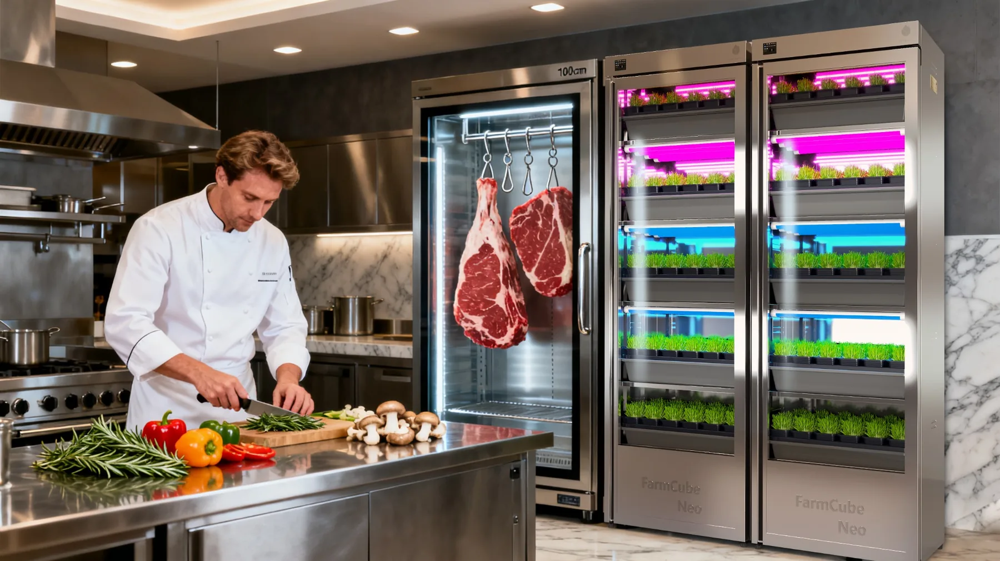
FarmCube Neo converts a compact footprint into a controlled indoor grow cabinet, helping foodservice and retail teams manage a visible, repeatable supply of microgreens close to preparation, service and display areas.
Select Neo-2T for compact kitchens and cafés, or Neo-5T for hotels, central kitchens, premium retail and higher-volume microgreens production.
A punnet-based workflow simplifies loading, crop rotation, harvesting and replacement without complex transplanting or open growing trays.
Place the cabinet near preparation, service or display areas to turn local growing into a practical supply tool and a visible part of the customer experience.
Both models use a controlled cabinet environment and the same punnet-based crop workflow. Select the tier count according to available space, required output and how visibly the system will be presented.
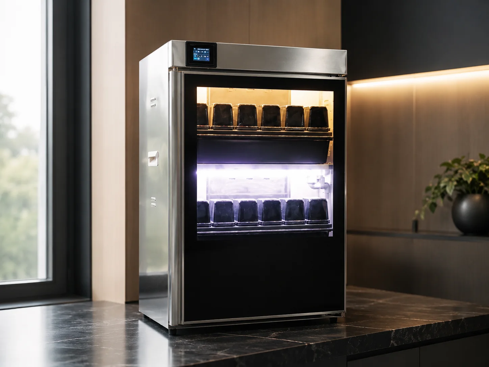
Two growing tiers for cafés, restaurant prep areas, demonstration kitchens and compact hospitality spaces that need fresh microgreens without a full-height cabinet.
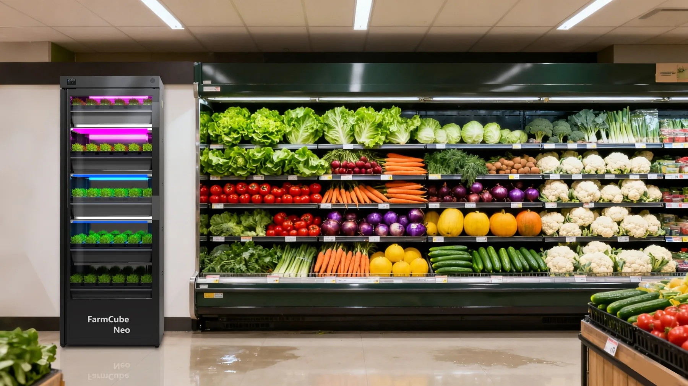
Five growing tiers for hotels, commercial kitchens, premium grocery, restaurant groups and locations requiring higher output with a strong customer-facing presentation.
| Model | Growing Tiers | Punnets / Cycle | Reservoir | Rated Power | Reference Weight |
|---|---|---|---|---|---|
| Neo-2T | 2 | 24 | 18 L | 120 W | 40 kg |
| Neo-5T | 5 | 60 | 30 L | 240 W | 70 kg |
FarmCube Neo can operate as a compact production cabinet, a back-of-house ingredient source or a visible fresh-produce feature integrated into the customer environment.
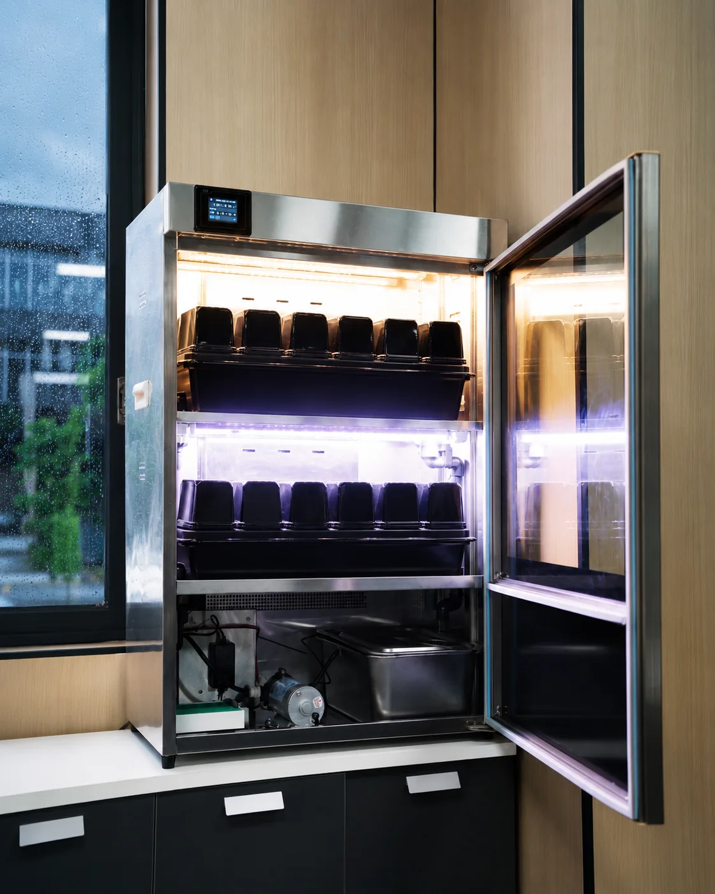
Neo-2T fits countertop and preparation environments where floor space is limited but fresh crop access matters.
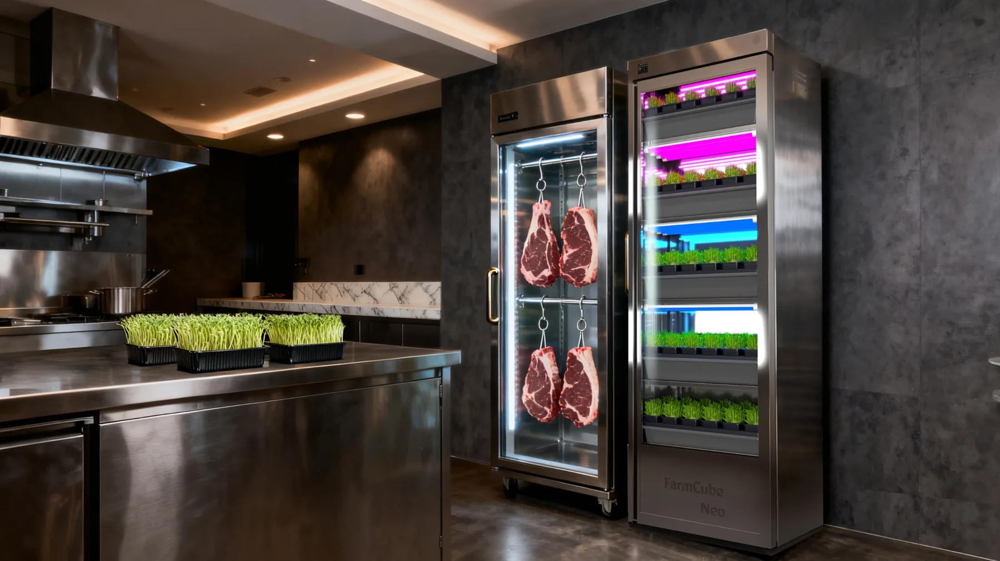
Position fresh microgreens close to mise en place, plating and garnish preparation for more direct crop handling.
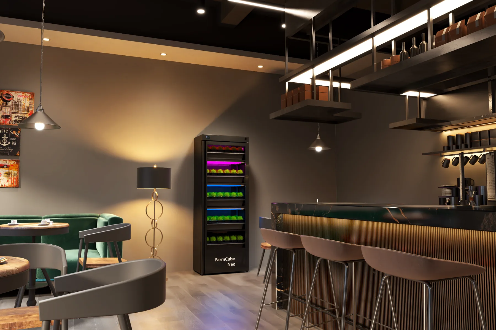
Add a visible growing feature for herbs, garnish crops and fresh menu storytelling in premium social spaces.
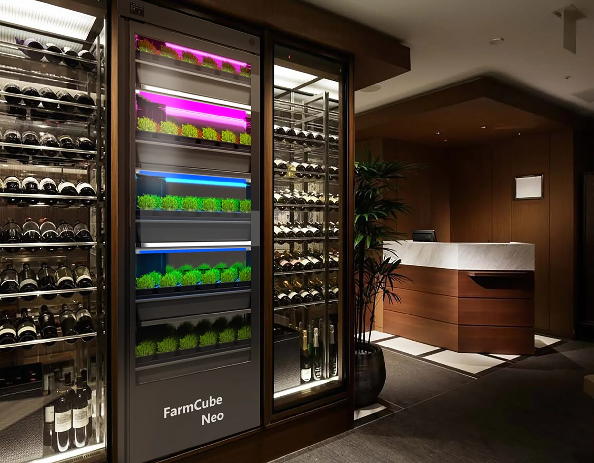
Integrate controlled microgreens production into hospitality, boutique retail and customer-facing food environments.
The controlled punnet system is designed for repeatable daily operation rather than complicated transplanting. Each tray holds 12 punnets for organised crop scheduling.
Add the growing mat and seeds to each punnet, then arrange the punnets inside the 12-position crop tray.
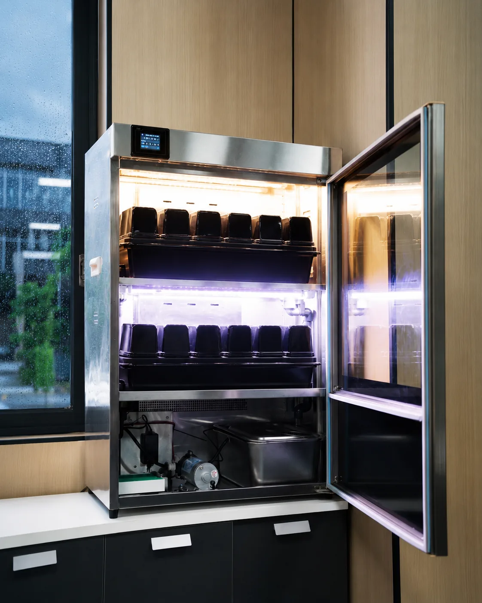
Select the appropriate lighting schedule while the cabinet manages aeroponic misting, air exchange and the controlled growing environment.
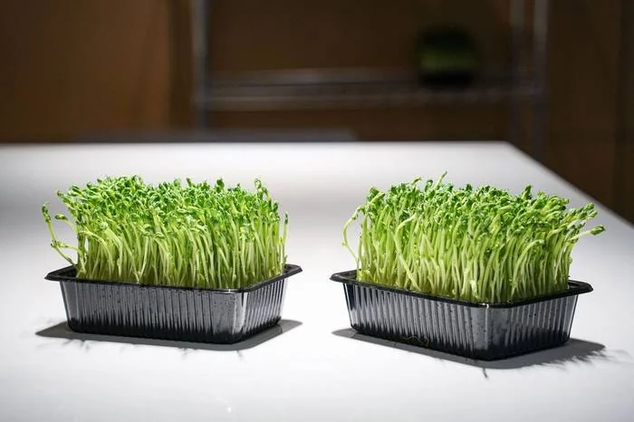
Harvest at the required crop stage, remove the used punnet and reload the tray to begin the next production cycle.
Technical information is organised around the decisions customers need to make: model capacity, crop workflow, growing environment, utilities and finish selection.
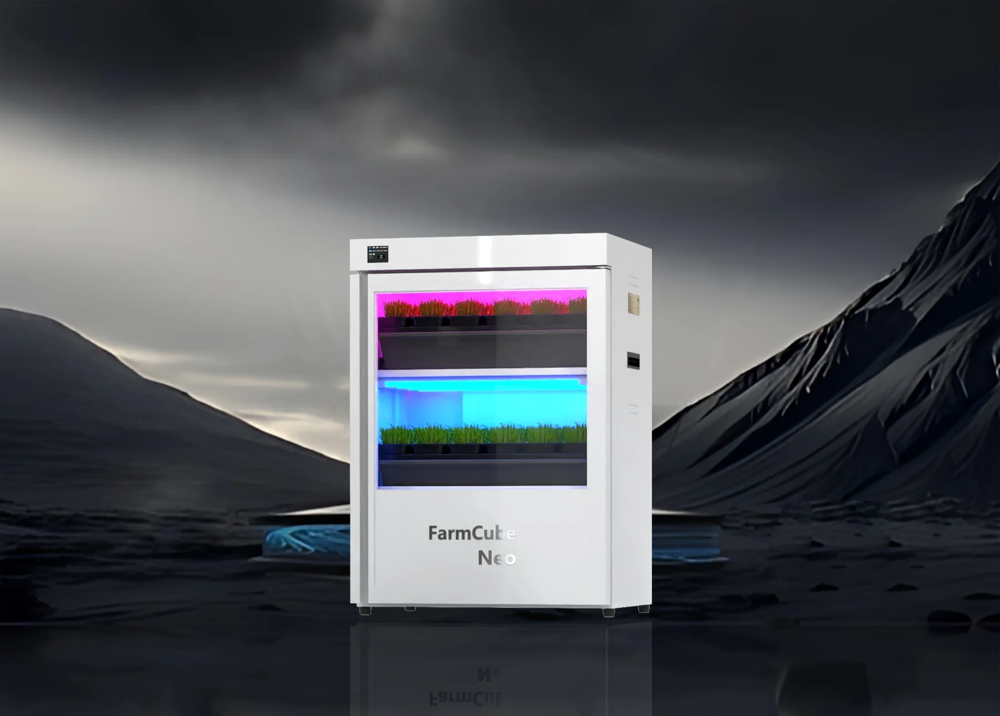
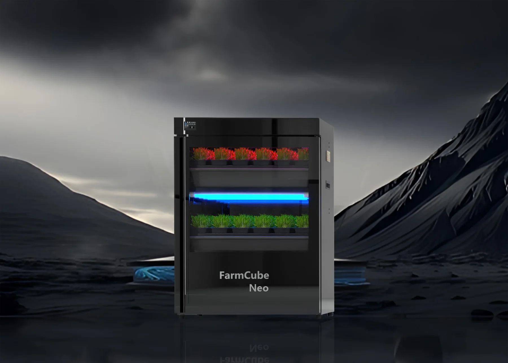
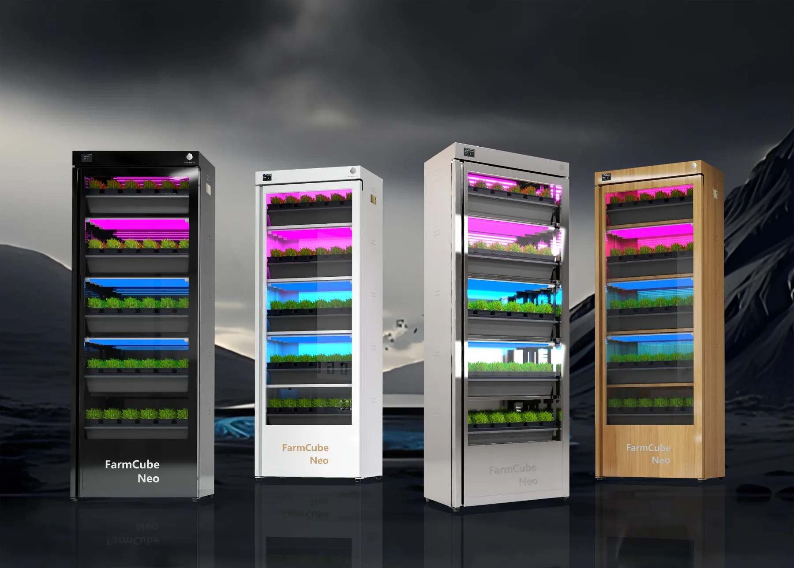
| Planning Item | Neo-2T | Neo-5T |
|---|---|---|
| Recommended use | Compact kitchens, cafés and demonstrations | Hotels, commercial kitchens, retail and higher output |
| Growing tiers | 2 | 5 |
| Punnets per cycle | 24 | 60 |
| Water reservoir | 18 L | 30 L |
| Rated power | 120 W | 240 W |
| Reference weight | 40 kg | 70 kg |
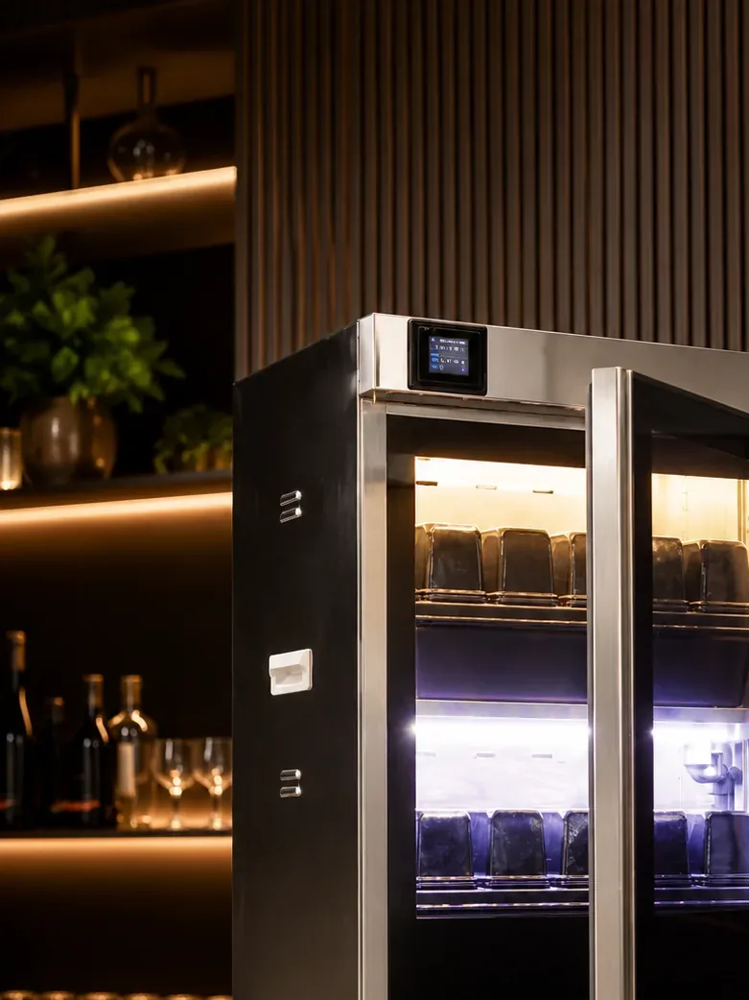
| Crop | Grow Period | Cycles / Year | Neo-2T Punnets / Year | Neo-5T Punnets / Year |
|---|---|---|---|---|
| Radish | 7 days | 52 | 1,248 | 3,120 |
| Pea | 6 days | 60 | 1,440 | 3,600 |
| Basil | 10 days | 36 | 864 | 2,160 |
| Cabbage | 14 days | 26 | 624 | 1,560 |
| Carrot | 13 days | 28 | 672 | 1,680 |
These figures are planning references from the FarmCube Neo production sheet. Actual crop output depends on seed quality, cultivar, harvest stage, operating programme and local environmental conditions.
Neo-2T provides two growing tiers and 24 punnets per cycle for compact kitchens and cafés. Neo-5T provides five growing tiers and 60 punnets per cycle for hotels, commercial kitchens, retail displays and higher-volume microgreens production.
Yes. FarmCube Neo is a professional indoor microgreens grow cabinet for restaurants, hotels, cafés and commercial foodservice locations that require compact crop production near preparation or service areas.
FarmCube Neo is intended for microgreens and culinary herbs such as radish, pea shoots, basil, cabbage, carrot, arugula, kale, broccoli, parsley and cilantro.
Seeds and growing media are loaded into biodegradable punnets, placed into the crop tray and grown under programmed lighting, aeroponic misting and controlled airflow before harvest and replacement.
Black, white, stainless steel and wood finishes are available to support different commercial kitchen, hospitality and retail interior requirements.
Send us your crop, space and production target. GROWSPEC will help model the system, output and ROI.